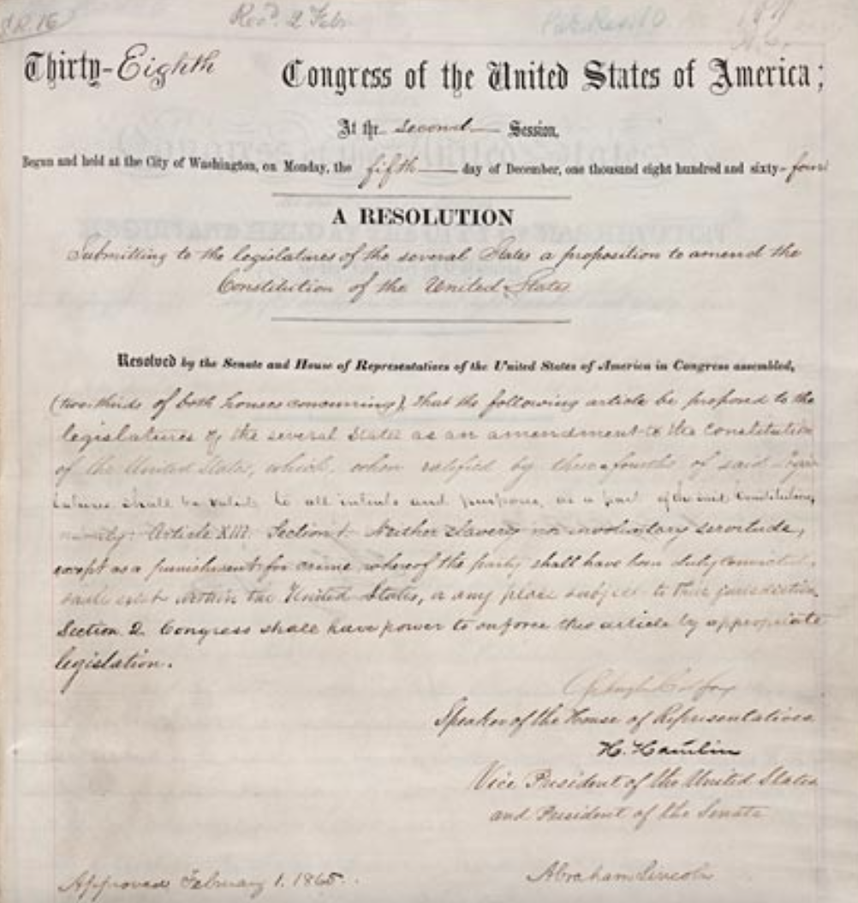
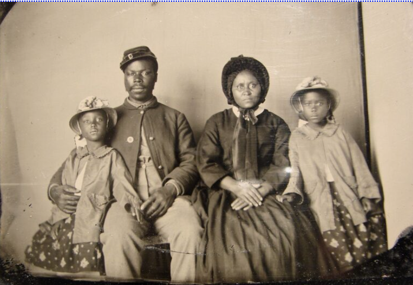

Section 1
"Neither slavery nor involuntary servitude, except as a punishment for crime whereof the party shall have been duly convicted, shall exist within the United States, or any place subject to their jurisdiction."

Background
In the midst of the Civil War in 1863, President Abraham Lincoln issued the emancipation proclamation, declaring that “all persons held as slaves within any State, or designated part of a State, the people whereof shall then be in rebellion against the United States, shall be then, thenceforward, and forever free.” However, Lincoln soon realized a more enduring solution was necessary to guarantee the abolishment of slavery as the emancipation proclamation only applied to Confederate states in rebellion. On February 1, 1865, Lincoln proposed the thirteenth amendment to the state legislatures. With the approval of three fourths of the states, the thirteenth amendment was ratified on December 6, 1865. With its addition to the Constitution, the nation had found a constitutional solution to slavery and along with the 14th and 15th amendment came a shift in post-war landscape, citizenship, and voting rights.
Impact
The 13th Amendment cemented into the Constitution certainly did not end discrimination and racism against those enslaved. However, it did illegalize slavery and began the journey to achieving equality for all Americans. In the end, around four million people, making up an eighth of the U.S. population at the time, were freed as a result.
African-Americans began to attend schools, learning basic skills such as reading and writing, skills that were once denied to them. These newfound skills enabled African-Americans to more easily participate in the evolving landscape of American society and blossom the start of their cultural and intellectual renaissance. A shift in population had also occurred, African-Americans migrated along the states in search of greater opportunity. Most residing in Maryland, Virginia, and the southeastern states. As decades pass, the integration of African-Americans becomes remarkable as they play vital roles in education and governmental positions.
